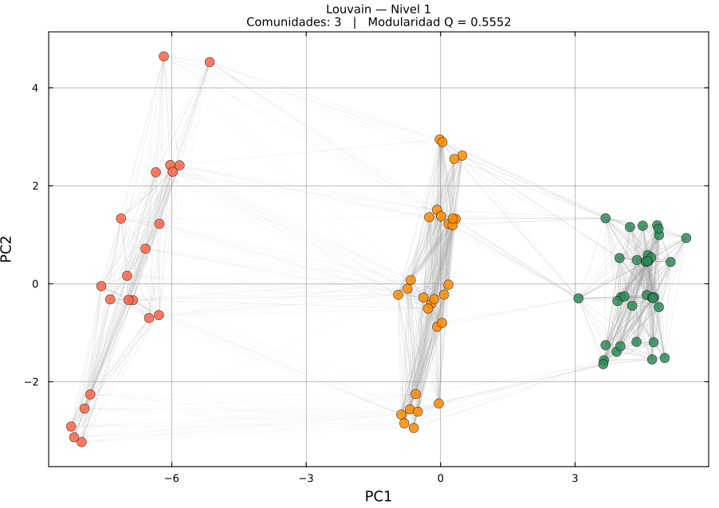

Grafo k-NN de actuadores · nodos coloreados por comunidad detectada
El número de comunidades no se fijó: emergió de maximizar Q. Louvain encuentra exactamente 3 grupos.
Sensibilidad al parámetro k del grafo
8k=10
7k=15
5k=18
4k=20
3 ◄k=25
3k=30
Nº de comunidades vs k · k ≈ 30% de n recupera la estructura real